Reshma lives in a coastal town of Kerala and is very fond of writing short stories. Her grandmother loves listening to her stories, so Reshma was writing a new story to share with her grandmother on her 60th birthday.
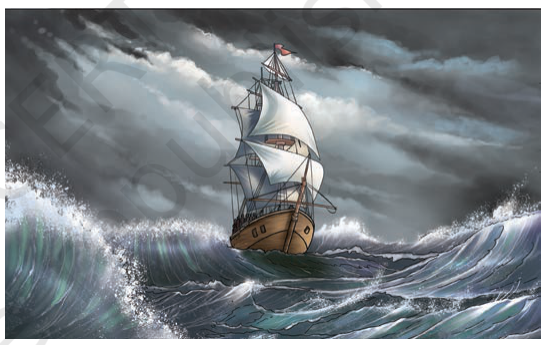
The story was based on a ship carrying spices from Kerala for trade in the olden days. Reshma was aware that in those days, the sailors used stars to find directions at night. But in her story, a situation arose wherein the sailors got caught in a storm with an overcast sky and stars were not visible. Reshma could not take her story forward as she could not think of a way for sailors to find directions.
She searched for information on the internet and her school library. She learnt that the travellers used a device, known as a magnetic compass, for finding directions.
Reshma had seen pencil boxes and purses which had magnets to keep them closed. A writing board in her school also had a duster with a magnet. But she had never looked at those carefully. She now became curious to learn more about magnets and magnetic compasses.
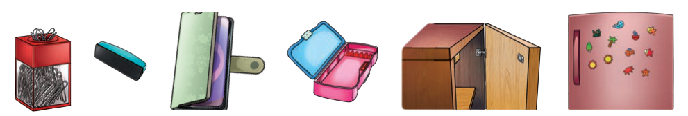
Fig. 4.1: Some common items that have magnets attached to them
The magnets used by sailors in the olden days were based on naturally occurring magnets, known as lodestones which were discovered in ancient times. Later on, people found out that magnets could also be made from pieces of iron. Nowadays, we have magnets made of different materials. The magnets that you find in your school laboratory and those used in pencil boxes, stickers, toys are all artificial magnets (Fig. 4.1). The magnets can be of various shapes, some of which are shown in Fig. 4.2.
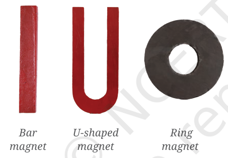
Fig. 4.2: Magnets of different shapes
4.1 Magnetic and Non-magnetic Materials
Activity 4.1: Let us explore
Collect a few objects made of different materials and also a magnet.
Predict which of the objects will stick to the magnet. Write your prediction in Table 4.1.
Now hold a magnet in your hand and bring it near the objects one by one (Fig. 4.3). Observe which of the objects stick to the magnet.
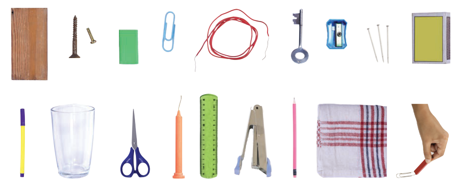
Fig. 4.3: Identifying the materials attracted by a magnet
Record your observations in Table 4.1.
Table 4.1: Identifying the materials attracted by a magnet
Name of the object
Material which the object is made of (plastic/wood/glass/iron/any other)
Attracted by the magnet (Yes/No): Prediction
Attracted by the magnet (Yes/No): Observation
Pencil
Wood
Eraser
Rubber
Was your prediction correct for all objects? Which materials stuck to the magnet? What conclusion can you draw?
Through this activity, we found out that some of the objects were attracted to the magnet and stuck to it, while others were not. The materials which are attracted towards a magnet are called magnetic materials. The metal iron is a magnetic material. Nickel and cobalt are other metals that are also magnetic. Some of their combinations with other metals are also attracted towards magnets. The materials which are not attracted towards a magnet are called non-magnetic materials.
Which materials listed in Table 4.1 were found to be non-magnetic?
4.2 Poles of Magnet
Activity 4.2: Let us investigate
Spread some iron filings (very small pieces of iron) on a sheet of paper.
Place a bar magnet over them. Tap the paper and observe carefully what happens to the iron filings.
Do you observe anything special about the way they stick to the magnet? Do the iron filings stick all over the magnet uniformly? Or do the iron filings stick more at some places?
We find that maximum iron filings stick near the ends of the bar magnet, as shown in Fig. 4.4, while a very few iron filings stick at the remaining part of the magnet.
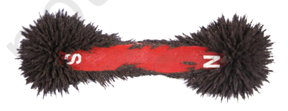
Fig. 4.4: Iron filings sticking to a bar magnet
These ends of the magnet are called the two poles of the magnet—the North pole and the South pole. Most of the iron filings stick to the poles of a magnet of any shape.
It is not possible to obtain a magnet with a single pole. If a magnet is broken into smaller pieces, North and South poles always exist in pairs even in the smallest piece of the magnet. A single North pole or a South pole cannot exist.
4.3 Finding Directions
Activity 4.3: Let us experiment
Suspend a bar magnet with a thread tied to the middle of the magnet as shown in Fig. 4.5. You may need to adjust the position of the string till the magnet is balanced horizontally.
Now rotate the magnet gently in the horizontal direction and let it come to rest.
Mark the position corresponding to the ends of the magnet on the ground (or on a piece of paper stuck to the ground). Join these two points on the ground with a line. This line indicates the direction along which the magnet comes to rest.
Now again rotate the magnet by giving a gentle push at its one end and wait till it comes to rest. Does the magnet rest along the same line?
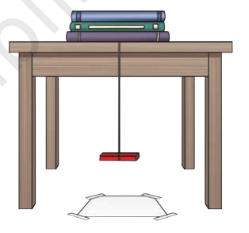
Fig. 4.5: A freely suspended bar magnet
A freely suspended magnet comes to rest along the north-south direction. The end of the magnet that points towards north direction is called the North-seeking pole or the North pole of the magnet. The other end that points towards the South direction is called the South-seeking pole or the South pole of the magnet. A freely suspended magnet rests along the north-south direction because our Earth itself behaves like a giant magnet.
Repeat this activity with a small iron bar in place of the bar magnet. What do you observe? Does it always rest along north-south direction? It does not. It can rest along any direction. This implies that only magnets rest along north-south direction. This activity provides us with a way to test whether a piece of metal is a magnet or not.
The property of a freely suspended magnet to always rest along the north-south direction is used to find directions. Based on this, a small device called a magnetic compass was developed in olden days for finding directions. It has a magnet in the shape of a needle which can rotate freely (Fig. 4.6). The needle of a magnetic compass indicates the north-south direction.
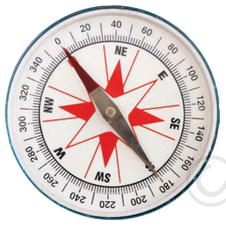
Fig. 4.6: A magnetic compass
The compass is kept at the place where we wish to know the directions. After some time, the needle comes to rest in the north-south direction. The compass box is then gently rotated until the north and south marked on the dial are aligned with the needle. Now all directions at that place are as indicated on the dial.
Activity 4.4: Let us construct
Collect a few materials like a cork piece, iron sewing needle, a permanent bar magnet, a glass bowl, and water.
Place the iron sewing needle on a wooden table. Then keep any one pole of the magnet at one end of the needle. Move the magnet over the needle along its length as shown in Fig. 4.7a. When it reaches the other end of the needle, lift it up.
Bring the same pole of the magnet you started with to the same end of the sewing needle from which you began, and repeat the previous step. Repeat this process at least 30 to 40 times.
Bring some iron filings or steel pins near the needle. If the pins or iron filings get attracted to the needle, then that means that the needle has become a magnet.
Pass this needle through the cork horizontally. Float the cork in a glass bowl filled with water, such that the needle always remains above the level of water as shown in Fig. 4.7b.
When the needle comes to rest, your magnetic compass is ready for use. Note the direction in which either side of the needle points.
Rotate the cork gently and wait till it stops rotating. Repeat this a few more times. Do the ends of the needle always point in the same direction?
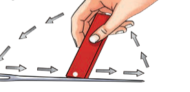
Fig. 4.7(a): Making an iron needle a magnet
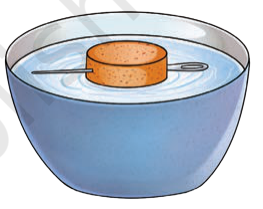
Fig. 4.7(b): A compass needle in a bowl of water
4.4 Attraction and Repulsion between Magnets
Activity 4.5: Let us experiment
Take a pair of bar magnets on which North and South poles have been marked. Mark the two bar magnets as A and B.
Place the longer side of magnet A over 5–6 round shaped pencils as shown in Fig. 4.8a.
Now bring one end of magnet B near the end of magnet A placed on the pencils. Make sure that the two magnets do not touch each other. Observe what happens.
Next, bring the other end of magnet B near the same end of magnet A (Fig. 4.8b). Does the magnet A on the pencils begin to move? Does it always move in the direction of the approaching magnet? What do these observations suggest?
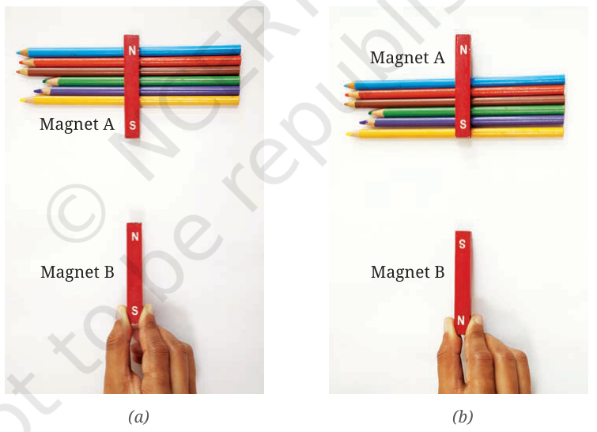
Fig. 4.8: Interaction between two bar magnets
You will see that unlike poles of two magnets, that is, the North pole of one magnet and the South pole of another magnet, attract each other. The like poles, that is, either the North poles or the South poles of both magnets, repel each other.
Repeat the activity by using an iron bar in place of one of the magnets. What do you observe this time?
You will find that both the ends of the iron bar will be attracted by both the North and South poles of the magnet.
From this activity, we find that a magnet can be identified by its property of repulsion.
Activity 4.6: Let us experiment
Take a magnetic compass and a bar magnet.
Place the magnetic compass over a horizontal surface and wait for its needle to come to rest.
Now slowly bring North pole of the bar magnet close to the North pole of the compass needle as shown in Fig. 4.9a. Observe the compass needle carefully. What do you observe? Does the needle deflect? If yes, in which direction?
Now repeat the above step with the South pole of the bar magnet. Do you observe any difference this time?
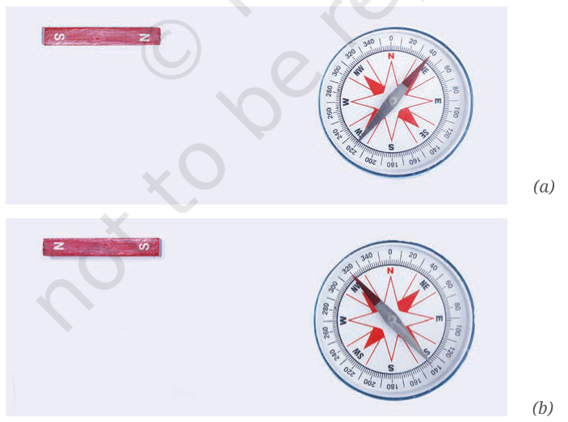
Fig. 4.9: A compass needle and a magnet
When the North pole of a magnet is brought closer to the North pole of the compass needle, it moves away as shown in Fig. 4.9a. When the South pole of the magnet is brought closer to the North pole of the compass needle, it moves closer (Fig. 4.9b).
Activity 4.7: Let us investigate
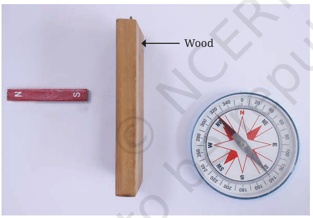
Fig. 4.10: Compass needle and a magnet with a piece of wood in between
Repeat the first or second part of Activity 4.6.
Without disturbing the bar magnet and magnetic compass, place a piece of wood between them, perpendicular to the table as shown in Fig. 4.10. Observe the compass needle carefully.
Is there any effect on the deflection of compass needle due to the piece of wood? Record your observation in Table 4.2.
Repeat the process by replacing the piece of wood with a cardboard sheet, thin plastic sheet, and a thin glass sheet.
Table 4.2: Observing the effect of magnet through non-magnetic materials
S. no.
Material placed between the magnet and the compass needle
Observations
1.
Wood
2.
Cardboard
3.
Plastic
4.
Glass
You would observe that there is no appreciable change in the deflection of the needle when a sheet of any of the above material is placed between the magnet and the compass needle. Therefore, we can conclude that the magnetic effect can act through non-magnetic materials.
4.5 Fun with Magnets
After learning about magnets, Reshma was excited and decided to set up some fun activities using magnets at her school fair. You may try making these yourself and may also think of some more fun ideas.
Can we make a garland? (Fig. 4.11)
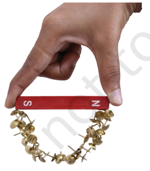
Fig. 4.11: Magnetic garland
Can we take the steel balls out of the maze by moving a magnet below the cardboard tray? (Fig. 4.12)
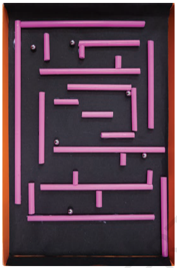
Fig. 4.12: Steel balls in a maze
Can we pick out a steel paper clip fallen in water using a magnet, without getting our fingers or the magnet wet? (Fig. 4.13)
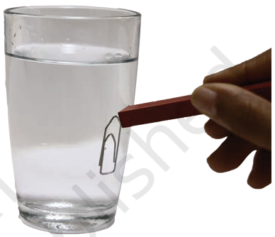
Fig. 4.13: Steel paperclip in water
Will the two cars speed towards each other or run away from each other when brought closer? (Fig. 4.14)
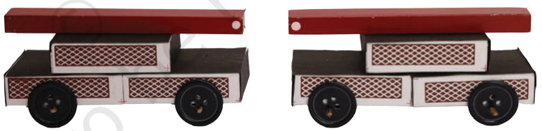
Fig. 4.14: Two matchbox-magnet cars with like poles of the magnets facing each other
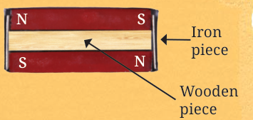
Keywords
Attraction
Bar magnet
Magnetic compass
Magnetic materials
Non-magnetic materials
North pole of a magnet
Repulsion
Ring magnet
South pole of a magnet
U-shaped magnet
Conclude
Construct
Experiment
Explore
Investigate
Observe
Predict
Record
Summary
A magnet has two poles—the North pole and the South pole.
The poles of a magnet always exist in pairs. A single North pole or a single South pole cannot exist.
Magnetic materials are the materials that are attracted towards a magnet.
Non-magnetic materials are the materials that are not attracted towards a magnet.
A freely suspended magnet rests along the north-south direction.
The needle of a magnetic compass indicates the north-south direction.
When two magnets are brought close to each other, like poles (North-North, South-South) repel each other while unlike poles (North-South) attract each other.
Let us enhance our learning
Fill in the blanks
(i) Unlike poles of two magnets ________ each other, whereas like poles ________ each other.
(ii) The materials that are attracted towards a magnet are called ________.
(iii) The needle of a magnetic compass rests along the ________ direction.
Column I shows different positions in which one pole of a magnet is placed near that of the other. Column II indicates the resulting interaction between them for different situations. Fill in the blanks.
Atharv performed an experiment in which he took a bar magnet and rolled it over a heap of steel U-clips (Fig. 4.15). According to you, which of the options given in Table 4.3 is likely to be his observation?
Fig. 4.15: Bar magnet and heap of steel U-clips
Table 4.3: Number of pins attracted by the magnet at its various positions
Reshma bought three identical metal bars from the market. Out of these bars, two were magnets and one was just a piece of iron. How will she identify which two amongst the three could be magnets (without using any other material)?
While a mechanic was repairing a gadget using a screw driver, the steel screws kept falling down. Suggest a way to solve the problem of the mechanic on the basis of what you have learnt in this chapter.
Two ring magnets X and Y are arranged as shown in Fig. 4.16. It is observed that the magnet X does not move down further. What could be the possible reason? Suggest a way to bring the magnet X in contact with magnet Y, without pushing either of the magnets.
Three magnets are arranged on a table in the form of the shape shown in Fig. 4.17. What is the polarity, N or S, at the ends 1, 2, 3, 4 and 6 of the magnets? Polarity of one end (5) is given for you.
Using 3–4 different magnets, try to lift steel pins or U-clips and check which magnet picks up the largest number of pins. Discuss with your friends why different magnets might have picked up different numbers of pins.
Make a toy ‘Hopping Frog’ as a combined class activity with the help of your teacher. For constructing the toy, fix ring magnets in an alternate North-South fashion along the length of a scale using glue (Fig. 4.18a). Paint a frog on paper, cut along the outline and glue a ring magnet at its base. Take a transparent, flexible plastic strip (Fig. 4.18a) of a smaller size and glue it to the ring magnet which is attached to the frog.
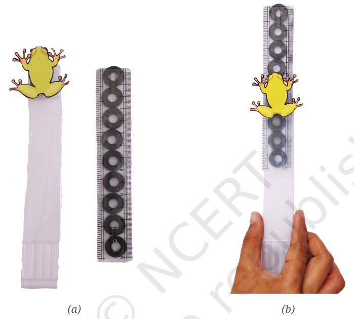
Fig. 4.18: My hopping frog
When you slide the plastic strip (with frog) over the scale (Fig. 4.18b), you can observe the frog hopping.
Find out about the Maglev Train and try to make its model.
Try to find out why there is a need to make magnets of different shapes.
Collect information related to the use of magnets in the field of medicine.